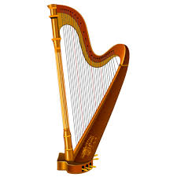

{kind=link}

The harp is a stringed musical instrument that has a number of individual strings running at an angle to its soundboard; the strings are plucked with the fingers. Harps can be made and played in various ways, standing or sitting and in orchestras or concerts. Its most common form is triangular in shape and made of wood. Some have multiple rows of strings and pedal attachments.
Ancient depictions of harps were recorded in current day Iraq (Mesopotamia), Iran (Persia) and Egypt and later in India and China. By medieval times harps had spread across Europe. Harps were found across the Americas where it was a popular folk tradition in some areas. Distinct designs also emerged from the African continent. Harps have symbolic political traditions and are often used in logos, including in Ireland.
Harps have been known since antiquity in Asia, Africa and Europe, dating back at least as early as 3000 BCE. The instrument had great popularity in Europe during the Middle Ages and Renaissance, where it evolved into a wide range of variants with new technologies, and was disseminated to Europe's colonies, finding particular popularity in Latin America.
Although some ancient members of the harp family died out in the Near East and South Asia, descendants of early harps are still played in Myanmar and parts of Africa; other variants defunct in Europe and Asia have been used by folk musicians in the modern era.
The earliest harps and lyres were found in Sumer, 3500 BCE, and several harps were excavated from burial pits and royal tombs in Ur. The oldest depictions of harps without a forepillar can be seen adjacent to the Near East, in the wall paintings of ancient Egyptian tombs in the Nile Valley, which date from as early as 3000 BCE. These murals show an instrument that closely resembles the hunter's bow, without the pillar that we find in modern harps. The chang flourished in Persia in many forms from its introduction, about 4000 BCE, until the 17th century.
Around 1900 BCE arched harps in the Iraq-Iran region were replaced by angular harps with vertical or horizontal sound boxes.[6]By the start of the Common Era, "robust, vertical, angular harps", which had become predominant in the Hellenistic world, were cherished in the Sasanian court. In the last century of the Sasanian period, angular harps were redesigned to make them as light as possible ("light, vertical, angular harps"); while they became more elegant, they lost their structural rigidity. At the height of the Persian tradition of illustrated book production (1300-1600 CE), such light harps were still frequently depicted, although their use as musical instruments was reaching its end.
Mesolithic era paintings from Bhimbhetka shows harp playing. An arched harp made of wooden brackets and metal strings is depicted on an Indus seal. The works of the Tamil Sangam literature describe the harp and its variants, as early as 200 BCE. Variants were described ranging from 14 to 17 strings, and the instrument used by wandering minstrels for accompaniment. Iconographic evidence of the yaal appears in temple statues dated as early as 600 BCE One of the Sangam works, the Kallaadam recounts how the first yaaḻ harp was inspired by an archer's bow, when he heard the musical sound of its twang.
Another early South Asian harp was the ancient veena, not to be confused with the modern Indian veena which is a type of lute. Some Samudragupta gold coins show of the mid-4th century CE show (presumably) the king Samudragupta himself playing the instrument. The ancient veena survives today in Burma, in the form of the saung harp still played there.
The harp was popular in ancient China and neighboring regions, though harps are largely extinct in East Asia in the modern day. The Chinese konghou harp is documented as early as the Spring and Autumn period (770-476 BCE), and became extinct during the Ming dynasty (1368-1644 CE). A similar harp, the gonghu was played in ancient Korea, documented as early as the Goguryeo period (37 BCE - 686 CE).
Harps are essentially triangular and made primarily of wood. Strings are made of gut or wire, often replaced in the modern day by nylon or metal. The top end of each string is secured on the crossbar or neck, where each will have a tuning peg or similar device to adjust the pitch. From the crossbar, the string runs down to the sounding board on the resonating body, where it is secured with a knot; on modern harps the string's hole is protected with an eyelet to limit wear on the wood. The distance between the tuning peg and the soundboard, as well as tension and weight of the string, determine the pitch of the string. The body is hollow, and when a taut string is plucked, the body resonates, projecting sound.
The longest side of the harp is called the column or pillar (though some earlier harps, such as a "bow harp", lack a pillar). On most harps the sole purpose of the pillar is to hold up the neck against the great strain of the strings. On harps which have pedals (largely the modern concert harp), the pillar is a hollow column and encloses the rods which adjust the pitches, which are levered by pressing pedals at the base of the instrument.
On harps of earlier design, a single string produces only a single pitch unless it is retuned. In many cases this means such a harp can only play in one key at a time and must be retuned to play in another key. Harpers and luthiers have developed various remedies to this limitation:
These solutions increase the versatility of a harp at the cost of adding complexity, weight, and expense.
